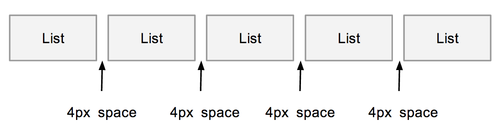

2014
May
30
CSS 中有一個屬性 display: inline-block ，這個屬性主要功能是將 HTML Element 排成一列，但是使用 inline-block 會有隱藏空白的問題，造成寬度計算錯誤。
實際測試 Browser 對 inline-block 的實作，結果如下圖，兩個 inline-block 中間會有 4px 的空白。
解決中間空白的方式不難，設定 margin 為負值，硬是將兩個 Element 拉近即可。
Resolve space of "inline-block"
View Demo
- .inline-block {
- margin-right: -4px;
- }
這個 4px 的空間跟 letter-spacing 設定有關，正常情況下會多 4px ，如果你的 letter-spacing 比較大，那麼就會超過 4px，可以適時的加大 margin-right 的值，或是參考下面介紹的兩種做法來解決。
移除 HTML 空白
另一種將兩個 Element 中間的空白移除的方式，是修改 HTML ，將兩個 HTML Tag 結尾與開頭中間的空白、換行移除，另外不必要的換行也應該要移除。
有空白的寫法
- <div class="parent">
- <div class="item-wrap">
- item 1
- </div>/*******Remove Space Here*******/
- <div class="item-wrap">
- item 2
- </div>
- /****Remove Break line here*****/
- </div>
移除空白的寫法
View Demo
- <div class="parent">
- <div class="item-wrap">
- item 1
- </div><div class="item-wrap">
- item 2
- </div>
- </div>
YUI3 letter-spacing
Yahoo YUI3 處理 inline-block 空白的方式比較特別，一開始要將 inline-block parent Element 的 letter-spacing 改成負的，這樣兩個 inline-block 就會粘在一起，不過一旦 letter-spacing 被修改，parent Element 底下的所有 Element 也會繼承到這個屬性，所以還要針對 inline-block Element 加上 letter-spacing: normal 調整回來。
yui3 remove space of inline-block
View Demo
- .parent {
- letter-spacing: -0.31em; /* Webkit: collapse white-space between units */
- *letter-spacing: normal; /* reset IE < 8 */
- *word-spacing: -0.43em; /* IE < 8: collapse white-space between units */
- text-rendering: optimizespeed; /* Webkit: fixes text-rendering: optimizeLegibility */
- }
- .inline-block {
- display: inline-block;
- width: 150px;
- height: 50px;
- zoom: 1;
- *display: inline;
- letter-spacing: normal;
- }